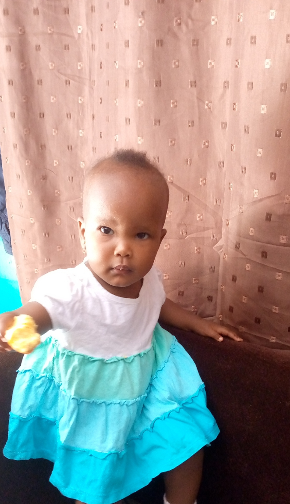
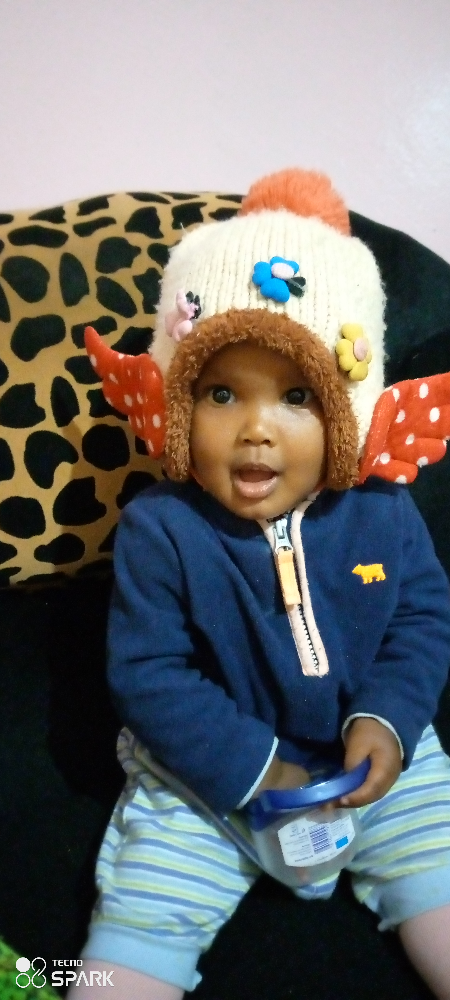
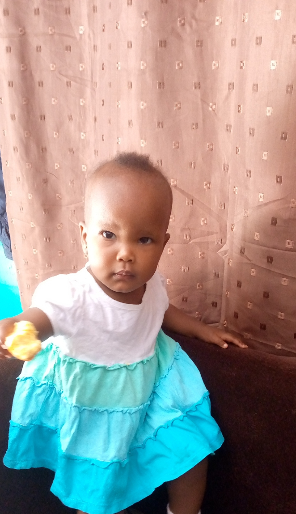
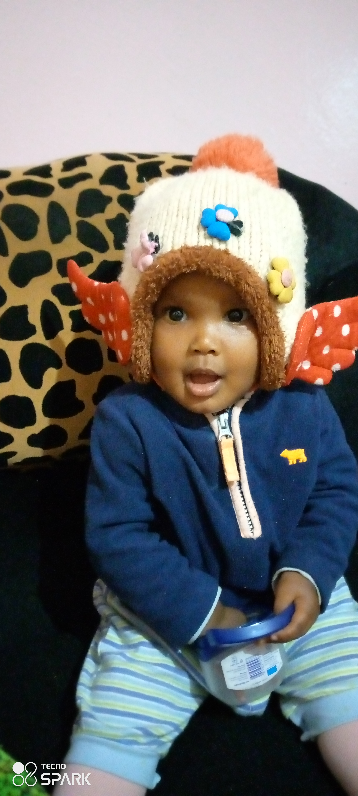
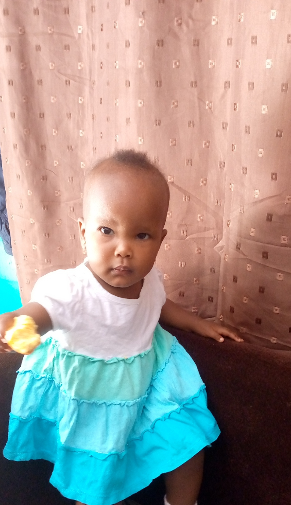
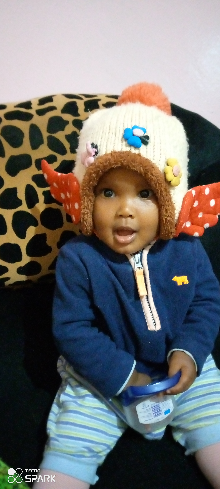
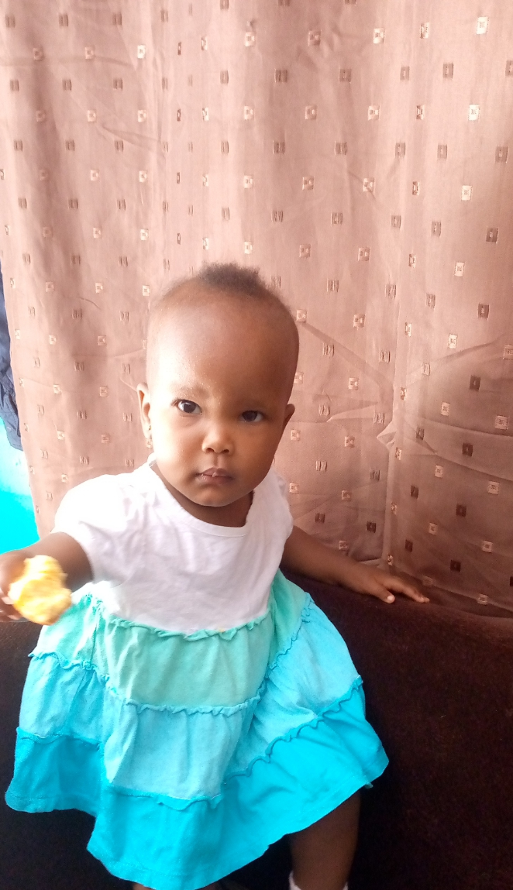
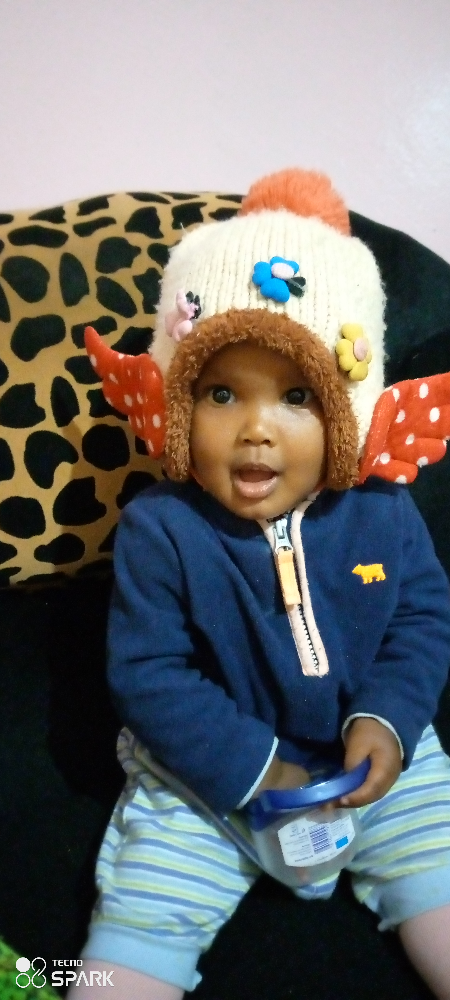

I have created a few projects while in Moringa. They include;
This is a project I created when I was in Moringa Pre-Prep. I used HTML and CSS. It was a tricky project because it was my first time designing a website then proceed to code it. It took me a week and four days to finish this project.
Hongwe resort required a website for their business, I used HTML and CSS to build them a good website. I created this project as an exercise during Prep coursework. It still needs a lot of work for it to be desirable to the customer.
This is a news article that I created using dummy text. I used HTML and CSS. I added some pictures of news articles to populate the page.
I was born in Lamu County in 1995. I am the second born of three kids. I started school in 1999. I completed my primary school education in 2008. I joined highschool in 2009 and went to a school in Limuru. The fees became too expensive and I had to transfer to another school in Tharaka-Nithi County. I completed my high school education in 2012. I got a B plain and was enrolled at Machakos University for a degree in Education(Home Economics).I joined university in 2013 and decided to change my course. My request to transfer to another course was accepted and I started my degree in Bachelor of Commerce. I graduated in 2018 with a Bachelor of Commerce (Accounting) second class lower division. My target was to get atleast a second class upper division so in my opinion I failed.
I decided to apply for a job at KFC when I was in campus during a long holiday break. I got it and worked there for 6 months. After graduating I got a job at a cyber cafe and that is where my interest in computers started. I got pregnant and did not have a chance to pursue my interest. I started doing online writing while I took care of the baby. When I heard about Moringa School Access Program I was ecstatic and I took that opportunity to pursue my interest in coding
Currently my hobbies are coding and taking walks whenever I have time.
I used to have many hobbies in the past but I don't have the time anymore. Coding and parenting have taken control of my life and I've got my hands full at the moment.
My previous interests were: